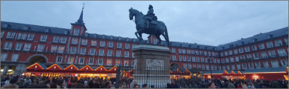

|  | |||
|---|---|---|---|
| 스페인 | 스페인 마드리드 마요르 광장 마요르 광장은 마드리드의 주요 역사적 장소 중 하나입니다. 광장 주변에는 카페와 레스토랑이 많아 음식을 즐기기에도 좋습니다. 마드리드의 플라자 마요르(Plaza Mayor) 중앙에 위치한 동상은 펠리페 3세(Felipe III)의 동상입니다. 이 동상은 1616년에 주조되었으며, 원래는 부에노스아이레스의 가든에서 설치되었다가 후에 스페인으로 옮겨져 마요르 광장에 설치되었습니다. | ||
| 유럽여행 | 마드리드 | 여행추천 | 펠리페 3세는 스페인의 왕으로서 스페인의 황금시대의 일부를 대표하는 인물입니다 |
| 여행시간 | 5시간 | 여행일자 | 2022. 12. 06 |
스페인의 전통을 고이 간직하고 있는 마요르 광장 마드리드 중심부에 위치한 마요르 광장은 현지인도 여행객도 모두 즐겨찾는 카페, 바, 상점들이 들어서 있는 활기찬 광장입니다.가로 90m 세로 109m 넓이의 4층 건물들이 에워 싸고 있는 직사각형 모양의 광장이며, 광장 중심에 펠리페 3세의 기마상이 있습니다.한때는 시장이었으나 16세기에 바로크 양식의 광장으로 변한 곳으로, 17세기부터 19세기 전반까지 왕가의 결혼식, 공연, 투우 등 다양한 행사가 이곳에서 열렸다고 하며, 주말에는 벼룩시장을 볼 수 있는 곳이랍니다.[출처] 마드리드 마요르 광장,스페인 마드리드,츄로스|작성자 알짜배기